Soil Monitoring Bot (**To Be Updated**)
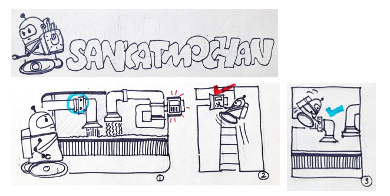
Sankatmochan is an Indian word in Hindi language which may be split into sankat (danger) and mochan (saviour) to resemble someone who saves a person in danger.
As industries evolve using technology into Industry 4.0, it is essential to identify potential dangers/threats and take action before any crisis. On an average, 2600+ industrial accidents occur every year in India alone resulting in the death of 2000+ employees. These range from incidents due to fire, gas leaks, boiler/cylinder explosions, operating machines, etc. Thus it becomes critical to identify such incidents at an early stage to prevent major accidents, saving lives of employees in industry 4.0.
Keeping the above scenario in mind, in eYRC 2020-21 we present the theme Sankatmochan, as the name suggests this is a rapid action robot deployed in a warehouse to monitor safety conditions in different units. The robot swiftly navigates through various units, checks the safety status and reports this to the safety unit. In this theme, the team will build the Sankatmochan to deploy it in industry 4.0. The brain of the robot is powered by an FPGA (Field Programmable Gate Array) to control its sensors and actuators to perform quick safety surveys of the shopfloor.
Major challenges and learnings in this Theme include building the Sankatmochan Bot from scratch using an FPGA. The FPGA based robot will traverse the arena, sensing the environment. It will also use wired and wireless communication techniques. This theme will help teams build a sophisticated Architecture using Verilog HDL and unveil the powerful parallel processing capabilities of FPGAs.
The team that builds the Sankatmochan Bot that best performs the task in accordance with the rules will be declared the WINNER.
Happy Learning !!
INDEX
Task 0
This task is divided into three parts :
- Software Installation
- Verifying Installation
- Learning Resources
Note :
1. It is recommended in this theme to use Windows 10 OS.
2. We will be using Verilog HDL in the entire theme.
- Software Installation :
- Verifying Installation:
- Learning Resources :
- Add Ons :
- Submission Instructions :
-
Create a new folder named SM#<Team-ID>_Task0 as shown below.
- Move or copy AND_GATE project folder to this new folder. Refer above video.
- Now create SM#<Team-ID>_Task0.zip file. For Team ID = 6789, SM#6789_Task0.zip must be created. Refer above video.
- This zip file must be uploaded on the portal, upload Task 0 section.
- Upload the SM#<Team-ID>_Task0.zip file on the portal. You can view all your submissions, so kindly download your submitted file from portal to verify the above steps. If anything is missing, please change it and re-upload the SM#<Team-ID>_Task0.zip file before the deadline.

b. Verilog HDL Tutorials
c. Two Way Switch
Congratulations! If your output waveform on Modelsim matches with the above image, you are done with the Task 0.
Note: Refer the Submission Instructions section for what and how to submit the task.

Note : AND_GATE project must be simulated using TestBench and Nativelink Simulation(Modelsim) method. Submitting unsimulated project folder will result in zero marks.
NOTE: If there are any changes in these submission instructions, we will post the update on Piazza only. So, please stay tuned there !
1. Introduction & Installation
1.1 Installing Quartus and ModelSim
- A full installation of the Intel FPGA Complete Design Suite v19.1 requires approximately 14GB of available disk space on the drive or partition where you are installing the software.
- Recommended Physical RAM requirement is more than 2GB.
Method 1. Download using Complete Software Package (Recommended)

- The Combined Files download includes a number of additional software components. This file provides device support for various device families.
- Arria II device support.
- Cyclone IV device support.
- Cyclone 10 LP device support.
- Cyclone V device support.
- MAX II, MAX V device support.
- After download is done on your local machine, extract the file using WinZip or any other software.
- Click on the Quartus Lite Setup (this file is located in components subfolder) and Allow the application to install it on your device.
- Click on Next to start with the installation.
- Click on I accept the agreement and proceed.
- Enter the path where you need the software to be installed.
- After this the installation starts and may take some time to complete. ModelSim and QuartusHelp will also get installed.


Method 2. Download using Individual Software Package
- In Individual Files download, download both Quartus Prime lite edition and ModelSim, you also need to download files to get support for a particular device family.
- Select from the below option which are necessary.
- Arria II device support.
- Cyclone IV device support. (Necessary)
- Cyclone 10 LP device support.
- Cyclone V device support.
- MAX II, MAX V device support.
- Download Cyclone IV device support as Intel DE0-Nano board uses Altera Cyclone IV, it will also support other device from the same family.
- After downloading necessary files extract them in a single folder and Click on the Quartus Lite Setup and Allow the application to install it on your device.
- Click on Next to start with the installation.
- Click on I accept the agreement and proceed.
- Enter the path where you need the software to be installed.
- After this the installation starts and may take some time to complete. ModelSim and QuartusHelp will also get installed.
- Copy the below files or Cyclone IV device support file (Necessary file) and paste it in the C:/intelFPGA lite/19.1/modelsim ase/win32aloem folder to get support of the device families while creating project.
- Click File → New Project Wizard to quickly setup a new project. Alternatively, New Project Wizard can be opened from the Home Tab that is seen when Quartus is opened.
- Click Next on the Dialog Box and select the Directory in which the project is to be saved. Give the Project Name and Click on Next.
- Click on Empty Project. Selecting this option will allow us to manually specify the additional files and libraries, device family and EDA(Electronic Design Automation) tool setting.
- In Add Files section, click on Next. For this project we don’t require any additional files, so now we can continue without adding any file in our project.
- Choose the FPGA Device that is being used. Click on Family and choose the Cyclone IV E. Select EP4CE22F17C6 from the Available Device. We can also search the device using the options provided in right side of the window.
- Select the tools used in this project. For Simulation tool name choose ModelSim-Altera. Also, choose simulation format as Verilog HDL.
- Review the summary, you can change the entries by Clicking on Back as we can not change these setting later in our project and make sure all the entries are correct. Click on Finish to successfully create a New Project.
- Click on File → New.
- Select Verilog HDL.
- Write down the below code in the newly created file. Also note that Verilog HDL is case sensitive.
- After completing the code click on File → Save As.
- Enter the name of file (it should be same as module name i.e. AND_GATE), enter correct file extension. For Verilog HDL file extension is .v and then Click on Save.
- To compile the file, the file must be the top-level enity of the project. We can assign the AND_GATE.v file as top-level entity by Project → Set as Top-Level Entity option in toolbar.
- Generate synthesis or final compilation results by running the following commands: Click Start Compilation shown in the figure below (red box) to generate final compilation results.
- 8 green LEDs
- 2 debounced pushbuttons
- 4-position DIP switch Dedicated pins includes
- Two 40-pin Headers (GPIOs) provide 72 I/O pins, 5V power pins, two 3.3V power pins and four ground pins.
- 2x13 header, A/D converter
Click on Assignments → Pin Planner, which opens the Pin Planner, the Pin Planner shows the I/O that we have created in our design.
Now assign the pins by either dragging and dropping the nodes(Blue box) on the required pins(Red box), or click on the drop down menu(Black box) to search and select a pin. We will select LED[0] as the output of the AND gate and switch 0 and 1 for input signal A and B.
- Make sure to select the appropriate I/O standard by referring to the board manual or go with the default setting.
Once all the pins are assigned, Go to Processing→Start I/O Assignment Analysis. The analysis checks pin assignments and surrounding logic for illegal assignments and violations of board layout rules.
Compile the Project by Clicking on Start Compilation. This creates an SRAM object file(.sof file). This file is used to program the Device.
Open the programmer by going to Tools→Programmer.
-
Click on Hardware Setup. The Device required must be listed under ”Currently available hardware”. If not, check if the device drivers are correctly installed. Refer to this link for USB Blaster Installation Instructions. Choose the hardware from the dropdown menu.
If the file is not listed, it can be manually added by clicking on Add File. The .sof file can be found the output directory inside the project directory.
Make sure the Program/Configure checkbox is ticked.
Click on Start to start the programming process. Start button will be enabled when the ’DEO NANO’ board is connected to USB port of your device.
-
The .sof file is volatile i.e. the code will run as long as the board is powered on. Once power to the board is turned off then the code will be erased. So, to permanently upload the code to the DE0-Nano board we generate .jic file and upload this to the board using same steps. Refer video below to understand how to generate and upload .jic file.
- In the first method we set each input A and B manually and run the simulation to get the output C.
- In the second method, write a test bench file using Verilog HDL to simulate design in ModelSim.
- Click on File→New→University Program VWF.
- In the New window, Go to Edit→Insert→Insert Node or Bus.
- Click on Node Finder, in the New Window, Click on List.
Click on the highlighted button to add all the Nodes. Now Click on OK and then OK again.
Choose Input A and specify its value by choosing any of the options that are highlighted.
For example, to give the Clock pulse to A input, select the node, then Click on the Count Value button highlighted at the top in the below figure, and then specify the Clock Pulse of frequency 50ns.
-
Similarly, specify the input pattern for input B with Clock Pulse of frequency 100ns and then Click on the Simulate Icon. If a save prompt appears, then save the file. Do not change the file name and also do not change its location. By default file name will be Waveform.vwf and it will be stored by default in the project folder. Once the simulation process completes, the waveform will be displayed. This is the waveform before the simulation starts.
Create a new Verilog HDL. Add the testbench code and then save it in the same project directory (AND_GATE project). Verilog HDL test bench code is provided below.
- Specify the path to Modelsim Altera
- Go to the menu Tools → Options
- In the General category, Select EDA Tool Options.
- A dialogue box appears, where you can specify the path of Modelsim-Altera executable file. And Click OK.
- NativeLink Settings to configure Modelsim-Altera
- Go to the menu Assignments → Settings.
- Under EDA Tool Settings → Simulation. The dialogue box for simulation appears.
- For Tool Name, Choose Modelsim-Altera.
- Select Verilog as the Format for Output Netlist.
- Select simulation/modelsim as the Output Directory.
- Under NativeLink Settings, Choose Compile Test Bench → Test Benches. All these changes are indicated in the below figure.
- A new window appears Select New.
- Another window appears with the name New Test Bench Settings.
- Enter the Test Bench Name and Top Level Module in test bench as shown below. For both it should be "And_Gate_Test_Bench"
- Add the Test Bench File(And_Gate_Test_Bench.v) that we created above in the previous section and then click OK. To add the testbench file Click on 3 dots → Select the file → Click on Add
Goto menu Processing →Start→Start Analysis & Elaboration. After this Click on Processing →Start→Start Analysis & Synthesis on the same drop box. These step checks the error and collects all file name information and builds the design hierarchy for simulation.
- Go to menu Tools → Run Simulation Tool → RTL Simulation. It & automatically run EDA simulator (ModelSim-Altera) and compiles all necessary design files.
Finally ModelSim-Altera tool opens and you can view the waveforms. If waveforms do not appear then continue the steps.
In the Toolbar Click on Simulate→Start Simulation then a window will pop-up Add the Test bench file as shown in the below figure.
- Start the simulation by clicking on the Run All button in Toolbar.
- Navigating the simulation At this point you should have successfully run the simulation, but the waveform window is rather small and hard to see. We can move around in the simulation and see the value of the signals. Look for the cursor, a yellow vertical line in the waveform viewer, with the time in yellow at the bottom. You can use this line to move left or right in the waveform viewer and also zoom-in and zoom-out.
- Move the yellow vertical line across each set of inputs and output in the waveform, so that you can see the level of each signal and compare them with the truth table of the AND gate.
- By doing this you will notice that when both the inputs are high then only output is high or else it is low. which is actual logic for AND gate.
- Follow this procedure for each experiment you perform to verify your design.
- Combinational Circuit : The aim is to design a combinational circuit using 4-bit comparator, 4 input logic function and 4:1 multiplexer.
- Sequential Circuit : The aim is to design a 3-bit synchronous counter using T flip-flops.
- Finite State Machine : The aim is to design a Finite State Machine in Verilog HDL to detect sequence/pattern.
- Frequency Scaling and PWM : The aim is to implement frequency scaling in Verilog HDL and also implement Pulse Width Modulation.
- Getting Started with Quartus
- Verilog tutorials
- Magnitude Comparator
- Multiplexer
- Minimization of logic function
- Converting Verilog file to Block Diagram
Open comb_ckt.qpf (Quartus Prime Project File) located in the comb_ckt folder. Quartus Prime might take some time to load depending on the configuration of your PC. Once the project file is opened in Quartus Prime your Quartus window will look like the image shown below :
On the top left corner “Project Navigator” window shows the compilation Hierarchy of the project. Click on the dropdown menu and select Files view as shown in the image below.
You will find 5 files already present in the project folder : Mux_4_to_1.v (Verilog HDL file), Two_Bit_Comparator.v, Four_Bit_Comparator.v, Logic_Func.v, comb_ckt.bdf (Block Design File).
The first file is Two_Bit_Comparator.v (Verilog HDL file). Double click on it to edit. You’ll find prewritten code where the module is defined. Edit this file to design a 2-bit comparator but do not make any changes to the module declaration. Teams are not allowed to use predefined operators like ">", "<", "=" for comparison.
After designing a 2-bit comparator, you can edit the Four_Bit_Comparator.v file to design a 4-bit comparator. Again, do not make any changes to the module declaration. This 4-bit comparator is designed by instantiating the Two_Bit_Comparator design (which is created earlier) in Four_Bit_Comparator.v and teams are not allowed to use predefined operators like ">", "<", "=" for comparison.
Now that you have designed a 4-bit comparator, you can start editing Logic_Func.v file to design a 4-input logic function f(C,D,E,F) = Σm(0,1,6,7,8,11,12,15). Here C is MSB and F is LSB. Refer to Minimization of logic function resource to efficiently design the logic function.
Finally, design a 4:1 Multiplexer by editing Mux_4_to_1.v file. Inputs are I3(MSB), I2, I1, I0(LSB) and also two Select inputs S1(MSB), S0(LSB).
Once all the designs are successfully created, create a Symbol file for Mux_4_to_1.v, Four_Bit_Comparator.v and Logic_Func.v.
Now open comb_ckt.bdf (Block Design File) to create the final combinational circuit. In the comb_ckt.bdf file Inputs and Outputs are predefined, do not make any changes to these PORTS. Refer above block diagram for creating the combinational circuit. Properly add all the symbols which are created earlier and make correct connections between them.
Now, Generate Verilog HDL file from comb_ckt.bdf file. To do so, while comb_ckt.bdf is open click on File > Create/ Update > Create HDL Design File From Current File > Select Verilog HDL > OK.
Now comb_ckt.v is created and you can find this file in the comb_ckt folder in Windows File Manager. Rename this file to comb_ckt_verilog.v
We need to add this file to our project. Right Click on the Files symbol under Project Navigator > Add/ Remove Files in Project > Click on 3 dots > Select comb_ckt_verilog.v file > Open > Apply > OK.
Double click on the file added in the previous step. Now change the module name. Module name should be the same as file name i.e. comb_ckt_verilog. Do not make any other changes.
Now the next step is to make the comb_ckt_verilog.v file as Top-Level Entity. Right click on the comb_ckt_verilog.v file > Set as Top-Level Entity.
Compile your design : Processing > Start Compilation. Finally Run the RTL simulation. Tools > Run Simulation Tool > RTL Simulation. A new window will pop up after a few seconds and you will be able to see the results of your design in ModelSim Software. If your design is correct then you will see Congratulations message in the transcript (bottom section of ModelSim).
- T Flip Flop
- Counters
- Self Starting Counter
- Create 3-bit bus from each OUTPUT pin Q of T Flip Flop
- Converting Verilog file to Block Diagram
Open seq_ckt.qpf (Quartus Prime Project File) located in the seq_ckt folder. Quartus Prime might take some time to load depending on the configuration of your PC. Once the project file is opened in Quartus Prime your Quartus window will look like the image shown below :
On the top left corner “Project Navigator” window shows the compilation Hierarchy of the project. Click on the dropdown menu and select Files view as shown in the image below.
You will find 2 files already present in the project folder : T_ff.v (Verilog HDL file) and seq_block.bdf (Block Design File).
The first file is T_ff.v (Verilog HDL file). Double click on it to edit. You’ll find prewritten code where the module is defined. Edit this file to design a T Flip Flop which is positive edge triggered. Do not make any changes to the module declaration.
Once design is successfully created, create a Symbol file for T Flip Flop.
Now open seq_block.bdf (Block Design File) to create a synchronous counter for the given sequence. In the seq_block.bdf file Inputs and Outputs are predefined, do not make any changes to these PORTS. Refer below image to design 3-bit synchronous counter using T Flip Flops.
We will add the symbols of T Flip Flop created previously and connect the CLK pin of each Flip Flop to the predefined Input Clock PORT.
In the above image, you can see that the T input pin of each T Flip Flop is connected to some combinational circuit. You are required to design these circuits for the required count sequence.
You can use logic gate symbols available in Quartus to create combinational circuits. Click on Symbol Tool > primitives > logic as shown below.
Finally, connect all the 3 outputs of T FLIP FLOP to the 3-bit predefined bus using Orthogonal Bus Tool. Refer to the Resources section.
Once all the connections are successfully done, generate the Verilog HDL file from the seq_block.bdf file. To do so, while seq_block.bdf is open click on File > Create/ Update > Create HDL Design File From Current File > Select Verilog HDL > OK.
Now seq_block.v is created and you can find this file in the seq_ckt folder in Windows File Manager. Rename this file to seq_block_verilog.v
We need to add this file to our project. Right Click on the Files symbol under Project Navigator > Add/ Remove Files in Project > Click on 3 dots > Select seq_block_verilog.v file > Open > Apply > OK.
Double click on the file added in the previous step. Now change the module name. Module name should be the same as file name i.e. seq_block_verilog. Do not make any other changes.
Now the next step is to make the seq_block_verilog.v file as Top-Level Entity. Right click on the seq_block_verilog.v file > Set as Top-Level Entity.
Compile your design : Processing > Start Compilation. Finally Run the RTL simulation. Tools > Run Simulation Tool > RTL Simulation. A new window will pop up after a few seconds and you will be able to see the results of your design in ModelSim Software. If your design is correct then you will see Congratulations message in the transcript (bottom section of ModelSim).
Open fsm.qpf (Quartus Prime Project File) located in the fsm folder. Quartus Prime might take some time to load depending on the configuration of your PC.
You will find the fsm.v Verilog HDL file already added to the project.
Double click on it to edit. You’ll find prewritten code where the module is defined. Edit this file to design the required State Machine. Use Verilog case statement to design and write your code such that Quartus Generates a State Machine. For that, you will have to properly declare State Variables of the State Machine and also perform State Assignments correctly.
Compile your design. Processing > Start Compilation.
Now you can view a graphical representation of your designed State Machine in Quartus. Tools > Netlist Viewers > State Machine Viewer.
You can compare the State Machine which Quartus generated and the self designed State Machine. You can edit your Verilog code and repeat the above steps till the desired State Machine is generated.
Finally Run the RTL simulation. Tools > Run Simulation Tool > RTL Simulation. A new window will pop up after a few seconds and you will be able to see the results of your design in ModelSim Software. If your design is correct then you will see a Congratulations message in the transcript. Else you will see an Error message in the transcript.
You can also check waveforms and verify/debug your design.
Open the project file PWM_Generator.qpf which you have already downloaded from the above given link.
You will find the PWM_Generator.v Verilog HDL file already added to the project.
Double click on it to edit. You’ll find prewritten code where the module is defined. Read the comments provided in the PWM_Generator.v file properly. Edit this file to design a Frequency Scaling and Pulse Width Modulation module.
- First think how the input frequency of 50 Mhz can be scaled down to 1Mhz. (Think of a counter that can be used to achieve the desired output frequency).
- Duty cycle is 8 bit and it can have values between 0 - 100%. Think how this percentage input can be related to the on/off time of the signal generated in hint 1.
- To summarize, you are required to generate a PWM signal with variable duty cycle and output it on PWM_OUT signal. Use the DUTY_CYCLE input to vary the duty cycle (consider this as a variable whose value will be given externally). This PWM_OUT signal should be of 1MHz frequency.
Once you are done writing the verilog code. Compile your design. Processing > Start Compilation.
Once you are done with the compilation with no error, proceed with the RTL simulation.
If your design is correct you will see a congratulation your design works fine message at the transcript window. Else you will see an Error message in the transcript.
You can also check waveforms and verify/debug your design.
- ADC : The aim is to design a control module which will communicate with on board ADC (Analog to Digital Converter) and fetch the digital output.
- UART : The aim is to design a UART (Universal Asynchronous Receiver Transmitter) Transmitter with parameters described in the problem statement.
- clk_50 : This is 50MHz clock input to the adc control module. All other signals must be synchronized w.r.t this clock.
- dout : This is converted binary data which is received serially by adc control module. This is the digital output from ADC128S022 (outputted serially), so your designed module reads this serial data and outputs 12-bit data (parallel data) on d_out_chX output bus.
- adc_cs_n : Chip Select pin. When low selects the on-board ADC128S022.
- din : This output is used to give ADC_ADDR input to on-board ADC128S022. Refer Datasheet for more information. Use channels 5, 6 & 7.
- adc_sck : This output is given as input to ADC128S022 and it serves as a device clock for the ADC128S022. This clock signal should be 2.5MHz.
- d_out_chX (X = 5,6,7) : 12-bit binary output for channel X i.e. for ADC channel 5 the converted binary output will be available at d_out_ch5.
- data_frame : This is a 2-bit bus which is used only to represent 16-cycle operational frame. This is optional, but it is recommended to use this signal for better visualization of signals.
- For this task adc_sck = 2.5MHz, ADC channels = 5, 6 & 7 should be followed strictly.
- You are not allowed to use any code or part of the code which is available online.
- You are not allowed to use Nios architecture /IP blocks.
- You must only refer Using DE0-Nano ADC.
- Additionally you can also refer to ADC128S022 datasheet.
Open adc_control.qpf. You will find adc_control.v file where module is defined. Do not make any changes to input and output ports. Firstly, without writing any logic, perform Analysis & Synthesis (Ctrl+K). Now, Run RTL Simulation. You will see some waveforms in ModelSim window, these are the expected outputs.
Now, implement adc control module which outputs correct din & adc_sck signals, reads dout correctly and outputs the correct 12-bit data on correct output bus d_out_chX. You can create other verilog files in the project but adc_control.v should be the Top Level Entity.
After completing, run RTL Simulation. Actual output should match desired output. For Eg : adc_sck is actual output and adc_sck_exp is the desired or expected output. You can also check ModelSim Transcript window for "No errors" or "Errors" message.
- Start Bit
- Data Bits
- Parity Bit
- Stop Bit
- Baud Rate
- Number of Data Bits
- Parity Bit
- Stop Bit
- If your Team-ID is 2673 then your UART Transmitter should transmit "SM73".
- If your Team-ID is 0507 then your UART Transmitter should transmit "SM07".
- If your Team-ID is 6000 then your UART Transmitter should transmit "SM00".
- The clock input to UART transmitter module will be 50 MHz.
- Output of UART transmitter module will be tx signal which outputs "SMxx" serially.
- You can store "SMxx" string in a variable inside the UART transmitter verilog module.
Open sm_task2.exe file which is present in the downloaded folder. Enter your Team-ID and click "Done". Only enter the numeric part of the Team-ID i.e. if your Team-ID is SM#2673 then enter 2673 or if your Team-ID is SM#0100 then enter 0100. Task wont be evaluated if this step is not followed.
Now open uart.qpf. You will find uart.v file where module is defined. Do not make any changes to input and output ports. Firstly, without writing any logic, perform Analysis & Synthesis (Ctrl+K). Now, Run RTL Simulation. You will see some waveforms in ModelSim window, of these tx_exp signal is the expected output.
Now, implement UART transmitter module which outputs correct data on tx signal. You can create other verilog files in the project but uart.v should be the Top Level Entity.
- Above image shows transmission of "SM" only.
- Red part of the image shows the sequence of bits in correct order for transmitting "SM".
- Green part of the image can be used as a reference to design State Machine.
- We can see that the 2 Stop Bits are due to STOP BIT state followed by IDLE state.
- You are free to design a different state machine or complete the task without even implementing a state machine. It is recommended to design using state machine approach.
After completing, run RTL Simulation. Actual output should match desired output. The tx signal is actual output and tx_exp is the desired or expected output. You can also check ModelSim Transcript window for "No errors" or "Errors" message.
- Flex Printing & Block Making : In this task you have to print the arena.
- Hardware Testing : In this task instructions are given for testing the hardware provided in the robotic kit.
- Bot Building : In this task you will build the SM robot.
-
You must carry Soil_Monitoring_Bot_Arena.pdf file in any storage device to the vendor who prints the flex sheet.
-
Dimensions of the arena can be viewed in .pdf file by pressing CTRL+D in Adobe Reader. For your reference and verification, the flex sheet to be printed should be of dimension 7 x 7 sq feet (TO BE UPDATED).
-
You must also print colour patches which can be downloaded from here (TO BE UPDATED). Print these colour patches on the A4 size paper and 2 copies of each page.
-
Team is NOT allowed to make any changes in the .pdf files provided. Any team making such manipulations will be disqualified from the competition.
-
The vendor must print the arena directly from the .pdf file.
-
The vendor cannot make any changes in the .pdf file provided for printing.
-
If the vendor is using the CMYK color profile for printing, he/she must set the K value to 100 as that would give a perfect black color for the black lines of the arena.
-
Leave sheet open for about 30 minutes to dry in air after printing. After this, you can roll it and bring it home.
-
Do not fold the flex sheet. Always keep it rolled after using it.
-
You will be using the printed flex sheet throughout the competition, so teams are advised to store the rolled up flex sheet in a dry, safe place.
-
In this task the team is also supposed to make 8 cube blocks.
-
Each block should be of the dimension 5 x 5 x 5 cu. cm.(TO BE UPDATED)
-
These blocks should be extremely light weight, hence making them using thermocol is recommended.
-
After making these thermocol blocks, paste some ferromagnetic material on one side of each block. It should ideally cover one entire face of the cube. Do not use magnets.
-
Ferromagnetic materials (such as iron) are attracted to magnets which can be purchased from Hardware stores.
-
Below are some of the examples (should be of ferromagnetic material) :
-
Teams can use other materials but it is extremely important that they are very well attracted to magnets and light weight.
-
These blocks will be picked and placed by the robot using electromagnet hence the above point is emphasized.
-
After completing the above steps wrap 2 blocks with RED colour sheet, 2 blocks with GREEN colour sheet & 2 blocks with BLUE colour sheet. So you will have 6 coloured blocks and the remaining two blocks can be used as backup in case of accidental damage. Teams can make or purchase these coloured sheets but their colours should approximately match with the colour patches downloaded above.
-
Print the arena on the flex sheet as per the instructions given.
-
Place the coloured blocks and patches on the arena as shown below.
-
Click a clear picture of your Arena with blocks and patches placed. Make sure that the entire arena is visible as shown in the above image.
-
Name the image as 'task3.png' or 'task3.jpg' and add this image to a zip file named SM#<Team-ID>_Task3.zip
-
Upload this zip file on the portal, make sure that the size of zip file is below 5MB. Submitting unclear/rotated/cropped images will result in zero marks.
- Click here to download the checklist.
Teams should have a Digital Multimeter(DMM), breadboard, soldering iron and solder wire before continuing with this task.
Read the datasheet of all components before using them.
Make sure to connect correct input voltage to avoid damaging the components.
If any component gets damaged due to any reason, then the team has to arrange replacement component themselves. If team fails to arrange replacement, then team might not be able to continue in the competition.
- Make a single video to showcase the Hardware Testing using good quality camera. The resolution of the video should be good enough. You have to use a 5 Megapixel or higher camera to shoot the video.
- The video should demonstrate the working of all the provided components and if there is any fault in any of the component explain that in detail.
- Please note while recording the video one team member should explain the problems in the hardware if any. Maximum time limit of video: 3-4minutes.
- Upload the video on YouTube and provide the link on the portal under the Robotic Kit page on portal. If there is any problem in the hardware then post your query on the Piazza mentioning your Team ID and the fault in the hardware. No need to post the video link again on the Piazza.
-
You must carry Soil_Monitoring_Bot_Arena.pdf file in any storage device to the vendor who prints the flex sheet.
-
Dimensions of the arena can be viewed in .pdf file by pressing CTRL+D in Adobe Reader. For your reference and verification, the flex sheet to be printed should be of dimension 7 x 7 sq feet (TO BE UPDATED).
-
You must also print colour patches which can be downloaded from here (TO BE UPDATED). Print these colour patches on the A4 size paper and 2 copies of each page.
-
Team is NOT allowed to make any changes in the .pdf files provided. Any team making such manipulations will be disqualified from the competition.
-
The vendor must print the arena directly from the .pdf file.
-
The vendor cannot make any changes in the .pdf file provided for printing.
-
If the vendor is using the CMYK color profile for printing, he/she must set the K value to 100 as that would give a perfect black color for the black lines of the arena.
-
Leave sheet open for about 30 minutes to dry in air after printing. After this, you can roll it and bring it home.
-
Do not fold the flex sheet. Always keep it rolled after using it.
-
You will be using the printed flex sheet throughout the competition, so teams are advised to store the rolled up flex sheet in a dry, safe place.
-
In this task the team is also supposed to make 8 cube blocks.
-
Each block should be of the dimension 5 x 5 x 5 cu. cm.(TO BE UPDATED)
-
These blocks should be extremely light weight, hence making them using thermocol is recommended.
-
After making these thermocol blocks, paste some ferromagnetic material on one side of each block. It should ideally cover one entire face of the cube. Do not use magnets.
-
Ferromagnetic materials (such as iron) are attracted to magnets which can be purchased from Hardware stores.
-
Below are some of the examples (should be of ferromagnetic material) :
-
Teams can use other materials but it is extremely important that they are very well attracted to magnets and light weight.
-
These blocks will be picked and placed by the robot using electromagnet hence the above point is emphasized.
-
After completing the above steps wrap 2 blocks with RED colour sheet, 2 blocks with GREEN colour sheet & 2 blocks with BLUE colour sheet. So you will have 6 coloured blocks and the remaining two blocks can be used as backup in case of accidental damage. Teams can make or purchase these coloured sheets but their colours should approximately match with the colour patches downloaded above.
-
Print the arena on the flex sheet as per the instructions given.
-
Place the coloured blocks and patches on the arena as shown below.
-
Click a clear picture of your Arena with blocks and patches placed. Make sure that the entire arena is visible as shown in the above image.
-
Name the image as 'task3.png' or 'task3.jpg' and add this image to a zip file named SM#<Team-ID>_Task3.zip
-
Upload this zip file on the portal, make sure that the size of zip file is below 5MB. Submitting unclear/rotated/cropped images will result in zero marks.
- Prerequisites :
- Basic Resources :
- Two Way Switch
- Ripple Carry Adder
- Seven Segment Display
- Arithmetic Logic Unit
- Universal Shift Register
- Advanced Resources :

2. Getting started with Quartus
1. Creating a New project
To create a new project in Quartus Lite follow the below steps:
Note : Follow the steps carefully as once the project is created some settings cannot be changed.

Note : In below image the directory chosen is "C:\Users\QuartusProjects\First_Project", but you must create a different folder named AND_GATE anywhere on your local machine and choose this directory (Do not create this folder in C drive). Also, name the project as AND_GATE as you will submit this project folder as Task 0 submission. Top Level Module will be default i.e. AND_GATE
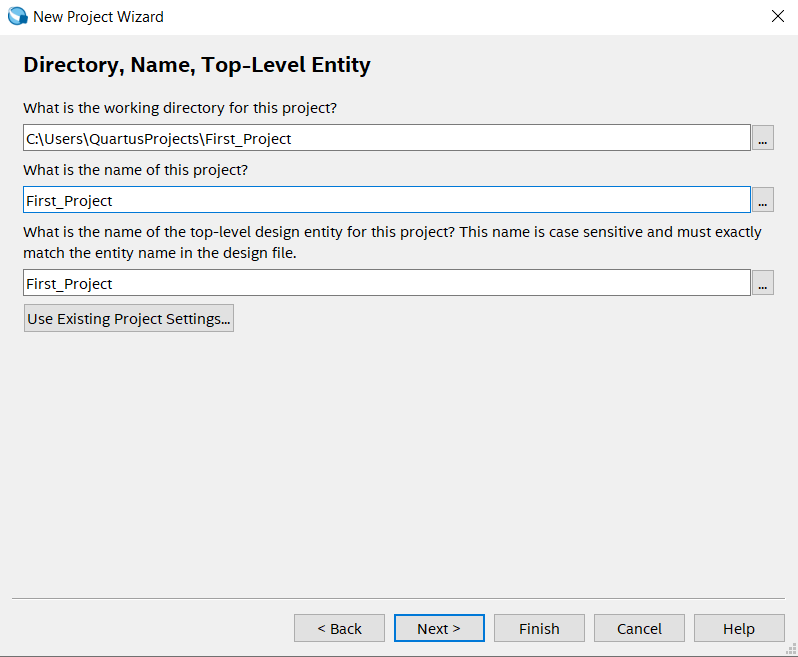
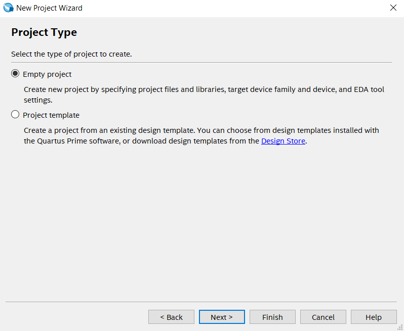
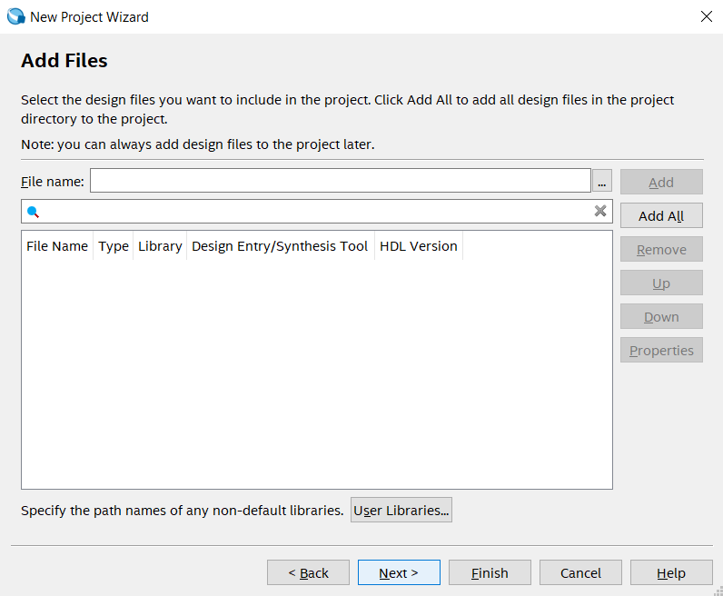
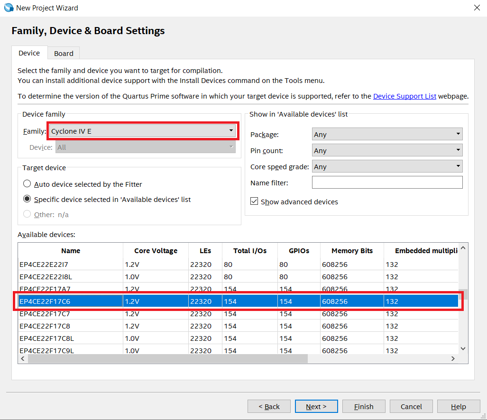
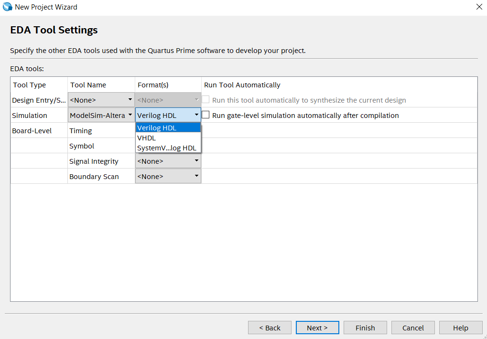
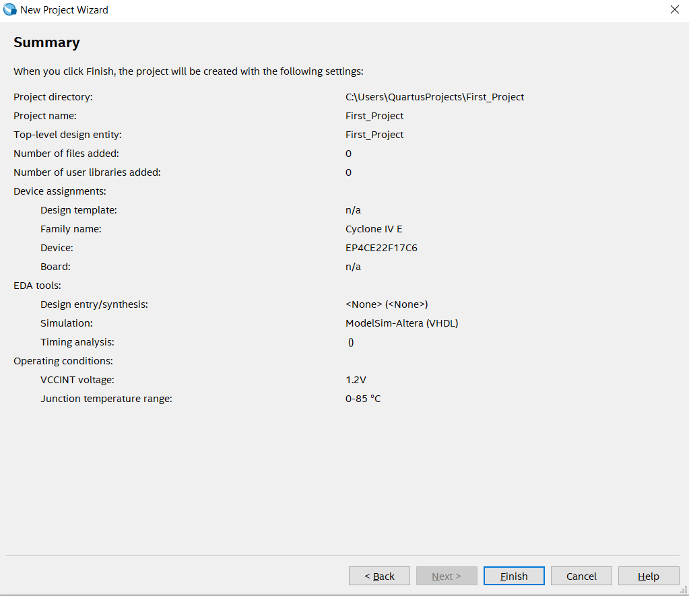
2. Creating new files in the project
Follow the below steps to add necessary file in our project:
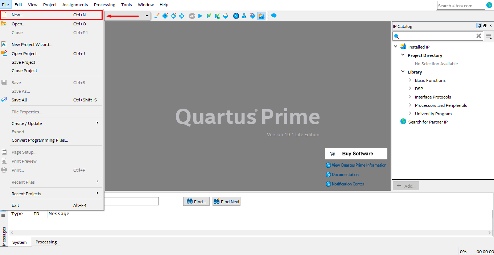
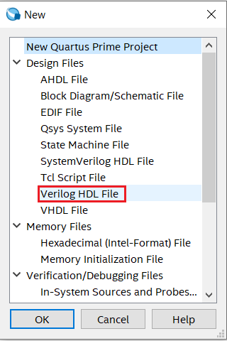
Verilog Code for AND gate
module AND_GATE
(
input A,B, // defining inputs A and B of AND gate
output C // defining output of AND gate
);
assign C = A & B; // Logic implementation
endmodule
3. Compiling the Project Files


3. Pin Assignment and Loading the design on FPGA board
1. Pin Description
Before starting with the pin assignment let’s first look at how many I/O pins are provided with DE0-Nano packages. Generally FPGAs tend to have lots of pins and we can divide them into two bins: ”General User Pins” and ”Dedicated Pins”.
DE0-Nano package contains the following General user I/O pins:


You can assign input and output (I/O) signals to package pins in your design with the help of above table. Using the Pin Planner, you can assign I/O locations, prohibit I/O locations. This process operates on the top entity in your design. This allows you to assign input and output signals to package pins before the underlying logic in the design has been developed. Further in this section we will map the I/O pins created in our design with the actual pins of the DE0-Nano. Before starting pin assignment make sure to do Analysis Elaboration check.
2. Pin Assignment


Else you can simply type the pin number in location field next to the corresponding I/O node. For eg: To select LED[0] as output, type it's pin number i.e. PIN_A15(refer table above) as shown in the image below.

3. Downloading the code to DE0 Nano FPGA Board
Before starting, Make sure the board is powered ON and connected to the computer through an USB Cable.


Note : The code uploaded using .jic file will start executing only after the DE0-Nano board is turned off and back on. Now even if the power is turned off, code is retained and DE0-Nano executes it as soon as power is turned on.
4. Verifying Installation
You can perform functional and timing simulation of design by using EDA simulation tools. We can simulate the design by two methods. These two methods are explained briefly below:
1. Without TestBench


Note : For our design a = A, b = B and out = C.

This is the waveform after the simulation ends.

2. With Testbench and NativeLink
Altera Quartus II software allows user to launch Modelsim-Altera simulator from within the software using the Quartus II feature called NativeLink. It facilitates the process of simulation by providing an easy to use mechanism and precompiled libraries for simulation.
Below is the Verilog HDL Test Bench Code for AND gate
// Verilog Test Bench code for AND gate
module And_Gate_Test_Bench ;
reg A;reg B;
wire C ;
// Defining unit under test i.e AND_GATE
AND_GATE uut (.A(A) ,.B(B) ,. C(C));
// Assigning all possible states for input A and B
initial begin
A = 0; B = 0; #100;
A = 0; B = 1; #100;
A = 1; B = 0; #100;
A = 1; B = 1; #100;
end
endmodule
Save the file with correct name (same as module name i.e. And_Gate_Test_Bench) and correct file extension, for Verilog HDL it is .v and then click on Save.
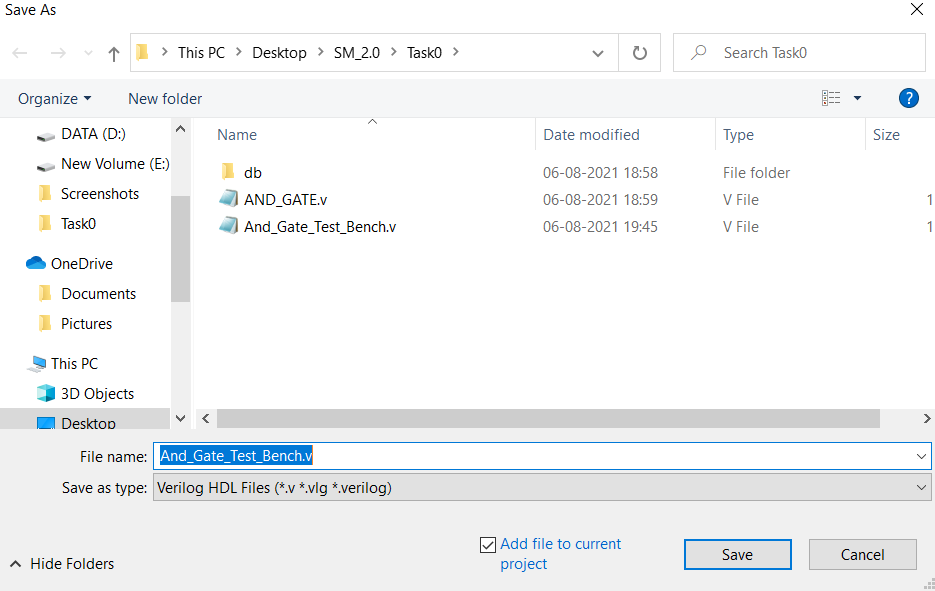


2.1 Functional Simulation using NativeLink Feature:


Add the I/O pins as shown in the below image. Select all the signals(A,B and C) and add it to ’wave’ section.


Task 1
Note: You can go back and read Task 0 as it will be a prerequisite for Task 1.
This task is divided into 4 sub-tasks:
You will find separate sections for each sub-task. Detailed procedure for each sub-task is described in their respective sections.
…BestWishes!…
Task 1 A : Combinational Circuit
Problem Statement : Design a combinational circuit using 4-bit comparator, 4 input logic function and 4:1 multiplexer. Minterms for logic function are f(C,D,E,F) = Σm(0,1,6,7,8,11,12,15).
Description :

Note : You are only allowed to modify the code/ block diagram wherever it is mentioned to do so. Modifying the restricted blocks of code/ block diagram will result in Zero Marks and/ or disqualification from the competition.
Project File : Download TASK 1 A
Steps :


Note : These five files are pre added to the project by e-Yantra team.
Note :To verify 2-bit comparator design, you can use University Program VWF method (refer Task 0).
Note : Refer to this link to understand module instantiation.
Note : Refer : Converting Verilog file to Block Diagram.
Note : Generate Verilog HDL file after completing the whole design. If you change anything in the block diagram file you have to again create a Verilog HDL file.
Before :
module comb_ckt(
C,
D,
E,
F,
S1,
S0,
A,
B,
Y
);
After :
module comb_ckt_verilog(
C,
D,
E,
F,
S1,
S0,
A,
B,
Y
);
Note : Follow the steps correctly and make sure that file/module names are exactly as described in above steps. Slight mistakes might lead to compilation errors.

Else you will see an Error message in the transcript.

You can also check waveforms and verify/debug your design.

When Output (Y) and Expected Output (exp_out) match, there will be no errors in the design.
Note : If you are not able to see waveform, you can right click and select zoom in/zoom out/zoom full as shown in the above figure.
…BestWishes!…
Task 1 B : Sequential Circuit
Problem Statement : Design a 3-bit synchronous counter for sequence : 6➡3➡5➡7➡2➡1, using T flip-flops. The unused states are 0 & 4.
Description :
Note : You are only allowed to modify the code/ block diagram wherever it is mentioned to do so. Modifying the restricted blocks of code/ block diagram will result in Zero Marks and/ or disqualification from the competition.
Project File : Download TASK 1 B
Steps :
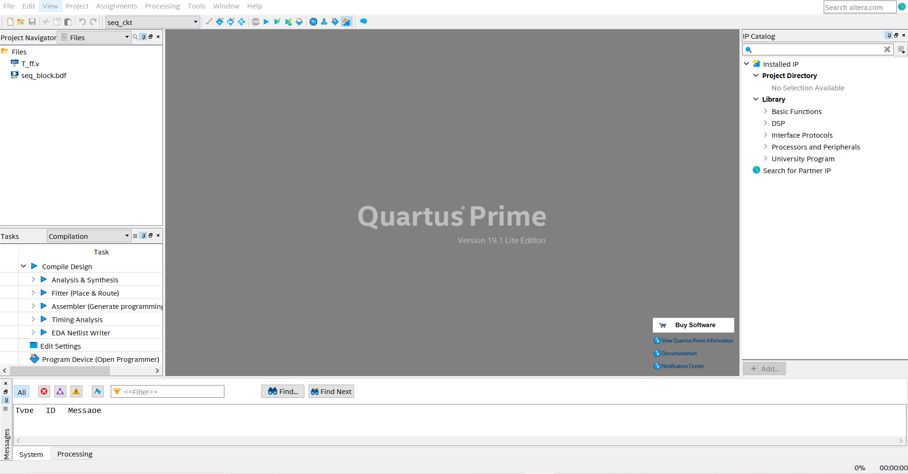
Note : These two files are pre added to the project by e-Yantra team.
Note :To verify T Flip Flop design, you can use University Program VWF method (refer Task 0).
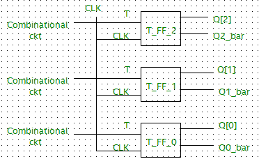
IMP : When designing the counter, make sure to include the unused states (0 and 4) in the design. Whenever 0 or 4 are encountered, the next state of the counter should be 6. So, (0 or 4)➡6➡3➡5➡7➡2➡1➡6➡3➡5➡7➡2➡1➡6.
Note : Before proceeding further, make sure that the instance names (Eg: inst, inst1,...) of each symbol in the block diagram file are different from each other or else it would throw an error.
Note : Generate Verilog HDL file after completing the whole design. If you change anything in the block diagram file you have to again create a Verilog HDL file.
Before :
module seq_block(
CLK,
Y
);
After :
module seq_block_verilog(
CLK,
Y
);
Note : Follow the steps correctly and make sure that file/module names are exactly as described in above steps. Slight mistakes might lead to compilation errors.
Else you will see an Error message in the transcript.
You can also check waveforms and verify/debug your design.
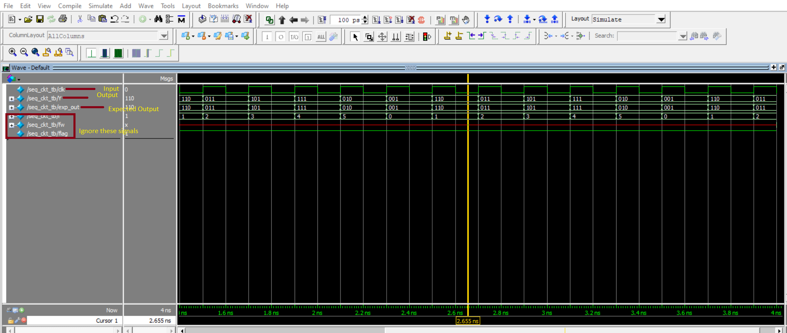
When Output (Y) and Expected Output (exp_out) match, there will be no errors in the design.
Note : If you are not able to see waveform, you can right click and select zoom in/zoom out/zoom full.
…BestWishes!…
Task 1 C : Finite State Machine
Problem Statement : Design a Finite State Machine in Verilog HDL to detect sequence/pattern 1094, which is a sequence of four decimal numbers (1,0,9,4).
Description :
Important : Your FSM design should work on the positive edge of the clock as shown in the below images.


Note : You are only allowed to modify the code/ block diagram wherever it is mentioned to do so. Modifying the restricted blocks of code/ block diagram will result in Zero Marks and/ or disqualification from the competition.
Project File : Download TASK 1 C
Steps :
Note : This file is pre-added to the project by the e-Yantra team.

Note : The above State Machine is not for detecting the sequence 1094. Also, this graphical State Machine will be generated in Quartus only if your Verilog HDL code is written in a way that Quartus understands it as a State Machine.
When Output(Y) and Expected Output(exp_out) match, there will be no errors in the design.
…BestWishes!…
Task 1 D : Frequency Scaling and Pulse Width Modulation
Problem Statement : To scale down the 50Mhz Clock Frequency to 1Mhz and implement Pulse Width Modulation on it.
Description :
E.g.
Input clk = 50Mhz
Input Duty Cycle = 50%
Output :
Input clk = 50Mhz Input Duty Cycle = 10% Output :
Project File : Download TASK 1 D
Steps :
Hint :
Note : The duty cycle will have value with a step size of 10% for simplicity in this task.
Note : Team can also use the .vwf technique to debug the code. But final code should simulate on modelsim with a proper transcript message i.e: Congratulations your design works fine.
…BestWishes!…
Task 2
Task 2 is divided into 2 sub-tasks:
You will find separate sections for each sub-task where a brief introduction and the problem statement is defined.
…BestWishes!…
Task 2 A : Analog to Digital Converter (ADC)
1. Introduction
In this theme, we will be using the De0 Nano development board which contains an ADC128S022 low power, eight-channel CMOS 12-bit analog-to-digital converter. This ADC provides conversion throughput rates of 50 ksps to 200 ksps. It can be configured to accept up to eight input signals at inputs IN0 through IN7. These eight input signals are connected to the 2x13 header, as shown in figure below. The remaining I/Os of the 2x13 header are a DC +3.3V (VCC33), a GND and 13 pins, which are connected directly to the Cyclone IV E device.
Important : Read Using DE0-Nano ADC as this document contains necessary information for successfully completing this task. This is mandatory.
In this task, we will be designing a 3-channel ADC Control module which will send channel addresses to on-board ADC128S022 and fetch digital data of analog value present on that corresponding channel. The on-board ADC128S022 will convert it to its equivalent 12-bit digital value which can be read by the FPGA (using ADC Control module).
We will be communicating with the ADC128S022 using SPI Protocol. It operates in a 16 cycle frame. The user is required to provide the SCLK, CS and DIN to the ADC128S022 and capture the DOUT signal as it is serially transmitted.

The DOUT signal provides the 12-bit converted value of the selected channel. On power-up, channel 0 is selected by default, while subsequent reads will use the address provided in the previous operational frame. The data bits are transmitted in descending order, such that the highest-order bit is delivered first. It is captured by the user on the rising edge of SCLK.
The DIN signal is used to select the channel to be converted in the following frame. It is delivered in descending order, and is captured by the ADC128S022 on the positive edges of SCLK. In order to avoid potential race conditions, the user should generate DIN on the negative edges of SCLK.
CS should be lowered on the first falling edge of SCLK and raised on the last rising edge of an operational frame. The SCLK frequency is limited to a range of 0.8 to 3.2 MHz in which the ADC will function correctly.
2. Interpretation of ADC output and Analog Input
ADC128S022 outputs a 12-bit value based on the analog voltage at its channel. ADC output of 000000000000 corresponds to 0 V and an output of 111111111111 corresponds to 3.3 V (the reference voltage of the ADC128S022 is 3.3 V, hence it's maximum digital output is for 3.3V).
Hence,
Maximum Input voltage = 3.3 V
Highest Output value from ADC128S022 in decimal = 4095 (i.e. 111111111111 in binary)
Voltage represented per LSB in Output (Resolution) = 3.3 V/4095 = 0.805 mV
Now, we know the relation between the ADC128S022 output and Voltage. By simply multiplying the above value i.e. Resolution with the ADC128S022 output (in decimal), we can calculate the voltage at the chosen input channel of the ADC.
Example :
Suppose the output of ADC is '100011111100' (2300 in decimal) then,
Analog Input = 0.805 mV*2300 = 1.85 V
Now suppose, analog input is 2.5 V then,
ADC output = 2.5/0.805 mV = 3105 in decimal = '110000100001' in binary.
Now, you know how to convert the analog input voltage to corresponding 12-bit digital output and vice-versa.
3. Problem Statement
In this task, you will be designing a control module which controls the on-board ADC. Basically, this "control module" sends necessary commands to the on-board ADC which is ADC128S022 and fetches the digital output. Your designed control module should have following inputs and outputs :
| Inputs | Outputs |
|---|---|
| clk_50 | adc_cs_n |
| dout | din |
| - | adc_sck |
| - | d_out_ch5, d_out_ch6, d_out_ch7 (12-bit) |
| - | data_frame (optional) |
Important :
Project File : Download TASK 2 A
Steps :
Refer below image to write logic for 3-channel ADC control module.
Note : In above image clock is actually adc_sck and data_ch5 = d_out_ch5 (similarly for other two outputs). Open the image in New Tab to view it better.
Important Reminder : For this task adc_sck = 2.5MHz, ADC channels = 5, 6 & 7 should be followed strictly.
…BestWishes!…
Task 2 B : Universal Asynchronous Receiver-Transmitter (UART)
1. Introduction
1.1 Universal Asynchronous Receiver-Transmitter Protocol
Universal Asynchronous Receiver-Transmitter (UART) is one of the simplest and oldest forms of device-to-device digital communication. UART is a serial communication protocol that performs parallel to serial data conversion at the transmitter side and serial to parallel data conversion at the receiver side.
UART transmitter and receiver works asynchronously, which means there is no clock signal to synchronize the output of bits from the transmitting UART to the sampling of bits by the receiving UART. Instead of a clock signal, the transmitting UART adds Start and Stop Bits to the Data Packet being transferred. These bits define the beginning and end of the Data Packet so the receiving UART knows when to start reading the bits. When the receiving UART detects a Start Bit, it starts to read the incoming bits at a specific frequency known as the baud rate.
1.2 Working of UART
One UART device consists of two parts : the first is Transmitter and the other is Receiver. It consists of two lines for data transmission, RX and TX, one in each direction as shown in the below figure.
1.2.1 Data Packet
The UART devices receive and transmit the data in serial manner. The communication takes place in a particular data format i.e the data is sent and received in a Data Packet. Each Data Packet consists of a Start Bit followed by Data Bits (usually 5 to 9-bits long) and then Parity Bit and at the end is the Stop Bit. The figure below shows the structure of the Data Packet used in UART communication.

When the transmitter is not sending any data the transmission line is held at a high voltage level that is at logic ’1’. To start the transfer of data the UART Transmitter pulls down the voltage to logic ’0’ for one clock cycle. When the UART Receiver detects this change from logic ’1’ to logic ’0’ it starts sampling the main Data Bits at a particular interval. This transition from high to low for one clock is indicated as the Start Bit period.
Once the Start Bit is detected the data that comes after it in the Data Packet is the actual data. Its length can be up to 5-bits to 9-bits long. In this task we will be using a 8-bit long data frame. In most cases, the data is sent with the least significant bit first.
Parity Bit is used to check if the data that comes to the UART Receiver of one device is the same as the data that is sent by the UART Transmitter of another device. Bits can be changed by electromagnetic radiation, mismatched baud rates, or long distance data transfers. Parity Bit is added after the Data Bits in the Data Packet. The Parity Bit can be 0 (even parity) or 1 (odd parity) depending upon the number of ’1’ in the data frame, if there are even numbers of 1 in the data frame then it is even parity or else it is odd. In this task, we will not use the Parity Bit in the data frame.
This bit marks the end of the Data Packet, as we know that the transmission line is pulled down from high to low to indicate the Start Bit, so at the end of the Data Packet we have to make the transmission line high again. The Stop Bit is always high.
1.2.2 Configuring the UART
Now that we have seen the structure of the Data Packet that is used for serial communication between two UART devices, let us now take a look at some important parameters that need to be considered while transmitting and receiving the data. These parameters must be the same for both the UART devices that are communicating with each other because there is no clock involved while the communication takes place (asynchronous communication). There are five parameters that we will take into consideration for defining the communication method.
The Baud Rate will specify the speed of the data that is sent over the serial line between the transmitter and receiver. It’s usually expressed in units of bits per second (bps). This parameter can be used to calculate how long a single bit will last while transmitting. This value determines how long the transmitter holds a serial line high/low or at what period the receiving device samples its line. One of the more common baud rates are 9600, 38400, 57600, and 115200.
Assume that we select a baud rate of 115200 for transmitting and receiving the data, and the clock frequency used in UART transmitter and receiver is 50MHz. Then the duration of a single bit and number of clock cycles that will be passed during this period can be calculated as per the below formula.
Note : The clock used in UART Transmitter and Receiver is specifically for their internal operation and not for transmission between them.
Duration Of Bit = 1/BaudRate = 1/115200 ≈ 8680ns
Clocks Per Bit = Duration Of Bit/Time Period of Clock = 8680ns/20ns = 434
OR
Clocks Per Bit = Clock Period/BuadRate = 50M/115200 ≈ 434
Clock Per Bit represents the clock cycles that a single bit must remains on the serial line.
This parameter defines the number of data bits in the data packet between the Start and Stop bit. We will consider 8-bits of data in our data packet for this task.
The parity bit in the data frame of the UART communication tells the receiving device if there is any error in the Data Bits. The parity mode can be set for even parity or odd parity. In this task parity bit is not used.
The Stop Bits are at the end of the data frame and indicate the end of that frame for the receiver. There are many standards where we can use 0, 1 or 2 Stop Bit according to the distance or environment in which UART communication takes place. In this task we will use 2 Stop Bits in our Data Packet.
Final UART parameters for this task :
| Parameter | Value |
|---|---|
| Baud Rate | 115200 |
| No of Data Bits | 8-bits |
| Parity Bit | None |
| Stop Bit | 2-bits |
1.3 Serial Data Transmission & Reception
The below diagram shows the serial data that UART Transmitter transmits on the transmission line from the Start Bit to the Stop Bit. The diagram also shows the data received by the UART Receiver and also indicates the position of sampling of Data Bits from the data packet.

Now, we have learnt about the working of transmitter and receiver along with the parameters that need to be configured between them.
2. Problem Statement
In this task, you will be designing UART Transmitter. This UART Transmitter will have same parameters as described above.
| Parameter | Value |
|---|---|
| Baud Rate | 115200 |
| No of Data Bits | 8-bits |
| Parity Bit | None |
| Stop Bit | 2-bits |
The UART Transmitter should transmit "SMxx", where xx are last two digits of your Team-ID.
For Eg :
Important :
So, the UART transmitter module will have following input and output :
| Input | Output |
|---|---|
| clk_50M | tx |
Project File : Download TASK 2 B
Steps :

Refer below image to implement a State Machine which outputs correct data on tx signal.

Note :
The check signal indicates the positions were there is a mismatch between tx and tx_exp.
So, for correct output the check signal will always be low and "No errors" message is also displayed on ModelSim transcript.
Once the output is correct i.e. there are no check signal pulses, observe time_err signal. This signal indicates the timing error between tx and tx_exp.
Ideally, this signal should also be low always and this will happen only when the "Bit Duration" is 8680 ns (ideal value). So you must ensure that the width of the "time_err" pulses is as narrow as possible and ideally 0 i.e. no pulses. This becomes important if the design needs to be implemented on hardware.
…BestWishes!…
Task 3
Task 3 is divided into 2 sub-tasks:
A. Flex Printing & Block Making
Instructions for Flex Printing :
Please download the Soil_Monitoring_Bot_Arena.pdf from here (TO BE UPDATED).
Instructions for Vendor :
General instructions for keeping flex sheet in good condition :
Block Making :
Refer below image for better understanding.

Instructions for Task Submission :(TO BE UPDATED)
IMAGE (TO BE ADDED)
B. Hardware Testing
Component list :
| Component | Specification | Datasheet |
|---|---|---|
| De0-Nano | 2-pin external power header (3.6-5.7V) | De0-Nano |
| N20 Motors | 6V-600RPM | - |
| L9110s Motor Driver | Supply voltage: 2.5-12V, maximum operating current of 0.8A | L9110s |
| 2S li-ion battery | 7.4 V | - |
| Line Follower Sensor | 3 channel | - |
| Xbee s2c Module | Supply voltage: 2.1-3.3V, operating Current: 33-45mA | xbee s2c |
| Color Sensor (TCS3200) | Supply voltage: 2.7-5.5 V | TCS3200 |
| USB to UART module (FT232RL) | 3.3V | FT232RL |
| Level Shifter | 5V to 3.3V Bidirectional | Level Shifter |
| Potentiometer | 10K ohm | - |
| Voltage regulator (AMS1117) | Input : 6.5V – 12V, Output : 5V, 800mAh | - |
| LEDs | RGB (Common anode) | - |
how does the component look like?
Important :
Power Supply
The battery provided in the kit is rated 7.4V, but most of the components in the kit work at 5V. So, we need to convert 7.4V to 5V. We use AMS1117 based voltage regulator whose input will be connected to the 7.4V battery. Red wire of the battery is connected to 'Vin+' input and black to 'Vin-' input of voltage regulator. Use the provided connector for the battery. A switch is also provided in the kit to turn on or off the supply. Then using a DMM team can check output voltage. Note that the output voltage may not be exactly 5V but will be close to 5V with tolerance of ±0.5V.

[Above image can be downloaded from here.]
{kind=link}
A 9V adapter is provided in the kit to charge the battery. When using the battery do not overcharge it and also do not over-discharge it. Maintain the battery voltage between 7.4V to 7V and hence battery should be constantly monitored with DMM. Battery can be charged by connecting 9V adapter pin to the corresponding connector on the battery.
1. Testing De0-Nano Board
You can test De0-Nano board by powering it on and uploading code to it. De0-Nano must be powered with 5V supply on external power pins (Refer Datasheet).
Note : De0-Nano board operates a 3.3V hence extra precautions must be taken when connecting any I/O to the board. Voltage above 3.3V applied to it's I/O pins will kill the board, however 5V input can be connected to external power pins as mentioned previously.
Pin Assignment section has been enabled in Task 0 so you can refer that to upload code to De0-Nano board.
Code files can be downloaded from here. Upload the .sof file to De0-Nano board and check the output.
Expected Output :
2. Testing RGB LED

RGB LEDs provided in the kit are common anode type. Refer above image for pin description (the longest pin is the common anode). Do note that for using LEDs resistors must be used compulsorily to limit the current. Four resistors are also provided in the kit. Now to test RGB LEDs connect each LED (one at a time) as shown in below image. Upload code provided and check the output.
Code files can be downloaded from here.
Connections :
| Pin | Connection |
|---|---|
| Common Anode | GPIO-0 Pin 29 (3.3V) via Resistor |
| R | GPIO-0 Pin 36 (GPIO_029) |
| G | GPIO-0 Pin 38 (GPIO_031) |
| B | GPIO-0 Pin 40 (GPIO_033) |

[Above image can be downloaded from here.]
{kind=link}
Expected Output :
3. Testing FT232RL & Xbee Modules
Before interfacing FT232RL USB to UART module check that the jumper is connected to 3.3V as shown in below image. If it is connected to 5V then remove it and connect it to 3.3V as shown below.

Now to test FT232RL USB to UART module make connections as shown below. Upload code provided and check the output. FT232RL USB to UART module and De0-Nano board use same USB cable and there is one such cable in the kit. Hence upload .jic file to De0-Nano board which is non volatile and then use the same cable to connect FT232RL USB to UART module to PC/Laptop USB port.
Code files can be downloaded from here.
Connections :
| Pin | Connection |
|---|---|
| VCC | GPIO-0 Pin 29 (3.3V) |
| GND | GPIO-0 Pin 30 (GND) |
| Rx | GPIO-0 Pin 40 (GPIO_033) |

[Above image can be downloaded from here.]
{kind=link}
Expected Output :

Terminal program used in above image is hterm. Make sure to select correct COM port and Baud Rate, refer above image for all settings.
Now to test Xbee module same code is used but first Xbee modules must be configured. This tutorial can be followed to configure Xbee modules. It is important to select 115200 baud rate while configuring and also it is recommended to configure the modules for point to point communication.
Xbee Module Pin-out :

Connections :
| Pin | Connection |
|---|---|
| VCC | GPIO-0 Pin 29 (3.3V) |
| GND | GPIO-0 Pin 30 (GND) |
| Rx | GPIO-0 Pin 40 (GPIO_033) |
The second module is connected to PC/Laptop via USB.

[Above image can be downloaded from here.]
{kind=link}
Expected Output : Same as above.
4. Testing Motors
Component and its use :
| Component | Use |
|---|---|
| Voltage Regulator | To supply 5V |
| Motor Driver L9110s | To provided proper voltage and current to motors |
| Level Shifter | To convert 3.3V output of De0-Nano to 5V for motor driver |
Connections :

[Above image can be downloaded from here.]
{kind=link}
| 5V Regulator | Connection | L9110 | Connection | Level Shifter | Connection |
|---|---|---|---|---|---|
| Vin+ | Battery +ve | MOTOR A | 1st Motor | HV1 | B-1A |
| Vin- | Battery -ve | MOTOR B | 2nd Motor | HV2 | B-1B |
| VCC | +5V | HV | +5V | ||
| GND | GND | GND | GND | ||
| A-1A | HV3(Level Shifter) | HV3 | A-1A | ||
| A-1B | HV4(Level Shifter) | HV4 | A-1B | ||
| B-1A | HV1(Level Shifter) | LV1 | GPIO-0 Pin 34 (GPIO_027) | ||
| B-1B | HV2(Level Shifter) | LV2 | GPIO-0 Pin 36 (GPIO_029) | ||
| LV | 3.3V (De0-Nano) | ||||
| GND | GND(De0-Nano) | ||||
| LV3 | GPIO-0 Pin 38 (GPIO_031) | ||||
| LV4 | GPIO-0 Pin 40 (GPIO_033) |
To test the motors, make connections as described above then upload code and verify output.
Code files can be downloaded from here.
Expected Output :
5. Testing Line Sensor
Pin description :

| Pin | Description |
|---|---|
| 1 | Left Sensor Data |
| 2 | Left Sensor Potentiometer |
| 3 | Center Sensor Data |
| 4 | Center Sensor Potentiometer |
| 5 | Right Sensor Data |
| 6 | Right Sensor Potentiometer |
| 7-14 | Not Connected |
| 15 | GND |
| 16 | GND |
| 17 | GND |
| 18 | Not Connected |
| 19 | 3.3V |
| 20 | Not Connected |
Connections :

[Above image can be downloaded from here.]
{kind=link}
| Pin No. | Pin Name | Connection to De0-Nano |
|---|---|---|
| 1 | Left Sensor Data | Analog_In0(2x13 Header Pin 24) |
| 2 | Left Sensor Potentiometer | Variable terminal of Potentiometer |
| 3 | Center Sensor Data | Analog_In1(2x13 Header Pin 25) |
| 4 | Center Sensor Potentiometer | Variable terminal of Potentiometer |
| 5 | Right Sensor Data | Analog_In2(2x13 Header Pin 22) |
| 6 | Right Sensor Potentiometer | Variable terminal of Potentiometer |
| 7 to 14, 18 & 20 | Not Connected | Not Connected |
| 15 | GND | GND |
| 16 | GND | GND |
| 17 | GND | GND |
| 19 | 3.3V | 3.3V |
Calibration :
As shown in the above video, potentiometers are used to calibrate the sensor. Basically, potentiometers control the voltage to the RED LEDs thereby increasing or decreasing their intensity. Higher the voltage, brighter the LEDs, more is the sensitivity. Do note that these sensors are highly affected by ambient light therefore correctly calibrating them is very important.
To test the Line Sensor, make connections as described above. Upload code and verify output.
Code files can be downloaded from here.
Expected Output : Check LEDs on De0-Nano board.
6. Testing Color Sensor
To test color sensor provided, make connections as shown in the image below.
Connections :

[Above image can be downloaded from here.]
{kind=link}
| Color Sensor Pins | Connection | RGB LED Pins | Connection |
|---|---|---|---|
| VCC | 3.3V | Common Anode | 3.3V via Resistor |
| GND | GND | R | GPIO-0 Pin 36 (GPIO_029) |
| OE, S1, S3 | GND | G | GPIO-0 Pin 38 (GPIO_031) |
| S2, S0 | 3.3V | B | GPIO-0 Pin 40 (GPIO_033) |
| OUT | GPIO-0 Pin 34 (GPIO_027) |
Now upload the code and check the LED color after placing color patches on the sensor. It is mandatory to use color patches provided in previous task.
Code files can be downloaded from here.
Expected Output : Notice the color of RGB LED.
Do note that this sensor is very sensitive to ambient light. Hence your output may vary depending on lighting conditions. If LED doesn't indicate correct color then the color patch can be moved away or towards the sensor to get correct output.
Note : The connections to the De0-Nano mentioned are only relevant for this specific task and for the specific code provided. Teams can use any other connections for own implementation later.
Video :
Note: If there no problem in the hardware and everything is working fine then no need to submit the video link on portal.
A. Flex Printing & Block Making
Instructions for Flex Printing :
Please download the Soil_Monitoring_Bot_Arena.pdf from here (TO BE UPDATED).
Instructions for Vendor :
General instructions for keeping flex sheet in good condition :
Block Making :
Refer below image for better understanding.
Instructions for Task Submission :(TO BE UPDATED)
IMAGE (TO BE ADDED)
Additional Resources
Instruction : If you have completed Task 0 you can carry on with the additional resources. Click here for additional resources section.
List of resources are as follows: